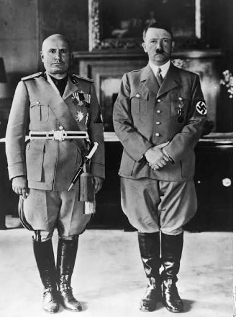
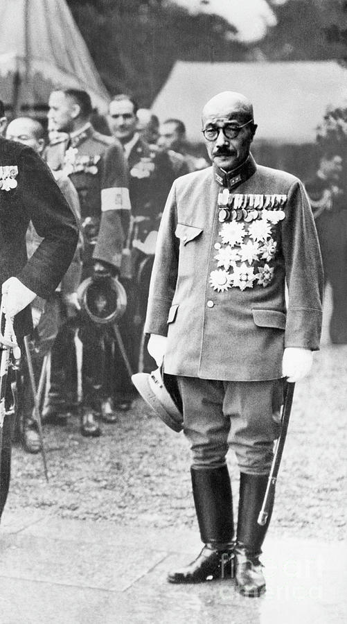
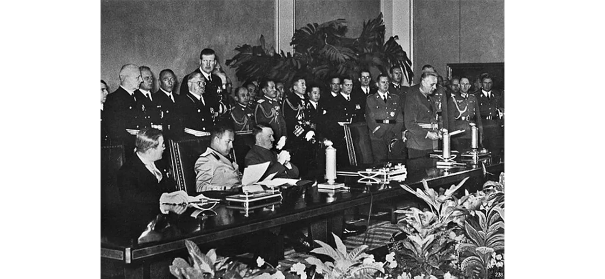

Axis Leaders in World War II: Hitler, Mussolini, and Tojo
Comparing Adolf Hitler, Benito Mussolini, and Hideki Tojo shows how distinct political systems, military cultures, and strategic assumptions shaped the Axis powers during World War II.
Paths to Power and Political Systems

Although Hitler, Mussolini, and Tojo all led nations at war against the Allies, each rose to power inside a different institutional setting. Mussolini was the first to build a one-party fascist dictatorship in Italy, moving from prime minister in 1922 to authoritarian rule backed by party institutions, police control, and propaganda.
Hitler took office as German Chancellor in January 1933 through coalition politics and then rapidly dismantled parliamentary democracy using emergency decrees and the Enabling Act. Once established as Führer, he combined absolute ideological authority with a state and party apparatus geared toward rearmament and racial expansion.
Hideki Tojo operated within a very different constitutional structure in Imperial Japan. As a career army general who became War Minister and Prime Minister in October 1941, Tojo exercised major executive and military influence while acting within a system centered on Emperor Hirohito, elder statesmen, rival military branches, and cabinet politics.
Where Hitler and Mussolini cultivated personal charisma and mass-party spectacle as central pillars of rule, Tojo's authority was more closely tied to bureaucratic and military hierarchy within the Imperial Japanese Army. Even so, all three relied on nationalism, censorship, and internal security to silence domestic opposition.
Political legitimacy and state control worked differently across Rome, Berlin, and Tokyo. Mussolini leaned heavily on fascist party rituals, state propaganda, and personal authority while coexisting with the monarchy until wartime defeats cracked his support. Hitler consolidated personal dictatorship swiftly in Germany, fusing party and state machinery around racial ideology and continental war. Hideki Tojo, by contrast, operated within a complex military and court structure where army leadership, rival service branches, and cabinet politics shaped decision-making.
Strategic Aims and Military Decision-Making

Each leader brought distinct strategic priorities and constraints to the wartime coalition. Hitler pursued continental dominance in Europe, ideological war, and the conquest of living space ('Lebensraum') in the east, frequently overriding experienced generals and refusing timely withdrawals even when fronts overextended.
Mussolini sought Mediterranean supremacy and an expanded Italian empire across North Africa, East Africa, and the Balkans. However, Italy's industrial base, raw-material supplies, and military readiness lagged behind its ambitions, leaving Italian forces strained across multiple theaters and reliant on German support.
Tojo and Japan's military leadership focused on securing resource-rich territories in Southeast Asia and the Pacific while establishing a defensive perimeter that they hoped would deter or exhaust American intervention. Attacking Pearl Harbor and European colonies in late 1941 brought Japan into war against the vast industrial capacity of the United States.
Coordination among the three capitals remained limited in practice. Despite treaties and shared opposition to the Allies, Germany, Italy, and Japan largely fought separate regional wars with overlapping resource strains and minimal joint operational planning.
Economic and industrial realities placed severe limits on all three Axis states once fighting widened into global campaigns. None of the three matched the combined industrial output, raw-material access, or shipping capacity of the Allied powers over a prolonged conflict. Shortages of fuel, metals, and transport strained operations across Europe, the Mediterranean, and the Pacific.
wartime Turning Points and Final Outcomes

By 1942 and 1943, strategic miscalculations caught up with the Axis across every theater. Stalingrad and Kursk checked German offensives in the east, Midway and Guadalcanal blunted Japanese momentum in the Pacific, and Allied victories in North Africa and Sicily cracked Italy's position.
Mussolini was the first of the three to lose formal state power in Italy, ousted in July 1943 before leading a German-backed puppet regime in northern Italy and meeting a violent end at the hands of partisans in April 1945.
Hitler remained in power until the final collapse of Nazi Germany in spring 1945, taking his own life in his Berlin bunker in late April 1945 as Soviet forces closed in on the capital and total defeat became undeniable.
Tojo resigned as Prime Minister in July 1944 following the fall of Saipan and mounting losses in the Pacific. After Japan's surrender in 1945, he survived a suicide attempt, was tried before the International Military Tribunal for the Far East in Tokyo, and was executed in December 1948—illustrating how different paths to wartime power ended in complete collapse for all three.
In the end, strategic overreach and coalition friction caught up with every Axis leader. Mussolini lost formal state authority in mid-1943 before leading a German-backed northern regime, Hitler ended his life in Berlin as Soviet forces closed in during spring 1945, and Tojo stepped down in mid-1944 before facing postwar war-crimes prosecution in Tokyo.
Military command habits also differed in notable ways across the three leadership styles. Hitler increasingly intervened in operational and tactical decisions on the Eastern Front and in Western Europe, often demanding rigid defense rather than allowing commanders room to trade space for time. Mussolini pushed for sweeping offensive goals across Africa and the Balkans even when logistics and equipment fell short, while Tojo worked closely with senior army planners on aggressive expansion across Southeast Asia and the Pacific.
Public messaging and censorship reinforced each regime's wartime narrative while masking mounting strain at home. Controlled press, radio broadcasts, and official communiqués framed setbacks as temporary tests or heroic sacrifices, yet shortages of food, fuel, and consumer goods gradually eroded civilian morale as Allied pressure intensified.
After the war ended in 1945, the legacies of these three regimes diverged sharply in postwar memory and law. West Germany and Italy rebuilt democratic constitutions amid division and reckoning, while Allied occupation authorities and international tribunals prosecuted surviving senior figures and forced a hard examination of how authoritarian rule and aggressive war had devastated whole societies.
Looking across all three leaders also underscores how domestic political structures shaped wartime endurance. Regimes built on personal authority, rigid ideology, or unexamined military assumptions struggled to adapt once strategic setbacks mounted and material disadvantages grew impossible to offset.
Taken together, examining Hitler, Mussolini, and Tojo shows how distinct authoritarian systems can converge around aggressive expansion while remaining vulnerable to overreach, coalition strain, and superior industrial endurance.
Their downfall also demonstrated that wartime propaganda and coercive control cannot substitute for sustainable logistics, sound strategy, or lasting alliances when facing a broad coalition.